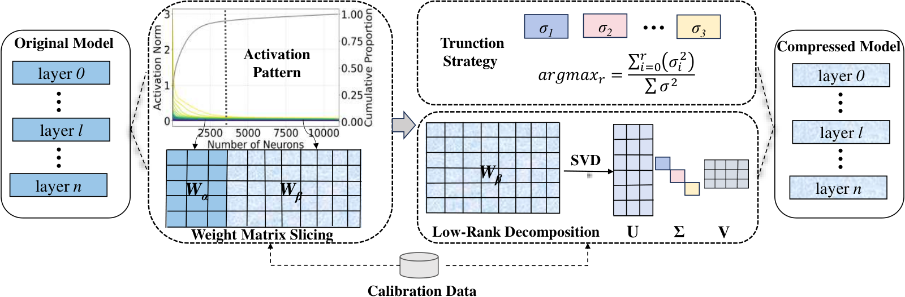

Why it matters왜 중요한가
Low-rank compression has a well-known ceiling: LLM weights are not actually low-rank, so a uniform SVD truncation cuts into the few directions that matter. SoLA's answer is not a better SVD. It first decides which part of each matrix should never be decomposed at all.
저랭크 압축에는 잘 알려진 한계가 있다. LLM 가중치는 실제로 저랭크가 아니어서, 균일한 SVD truncation은 정말 중요한 소수의 방향까지 잘라낸다. SoLA의 답은 더 좋은 SVD가 아니다. 먼저 각 행렬에서 애초에 분해하지 말아야 할 부분을 가려낸다.
ReLU-era models gave you activation sparsity for free. Deja Vu could skip whole slices of the FFN because most activations were exactly zero. SiLU and GeLU closed that door: negative inputs still produce small non-zero outputs, so there is nothing to skip, and unstructured sparsity needs hardware support that commodity GPUs lack. SoLA's observation is that the long tail survives in magnitude. Sort FFN neurons by activation norm and the cumulative curve saturates almost immediately (Figure 2 in the paper). Pruning just the top 1% of neurons in LLaMA-2-13B sends perplexity from 4.57 to 9665.4, while pruning the bottom 10% costs only 0.26. SoLA turns that asymmetry into a compression recipe that needs neither sparse kernels nor fine-tuning: the matrices stay dense and are simply split in two. It is also a timely read for this archive. Although it is an AAAI 2025 paper, it only reached arXiv in March 2026, and it is effectively a common ancestor of the 2026 SVD papers covered here (Swift-SVD, SigmaScale, UniRank). It uses SVD-LLM's truncation-aware whitening directly as its decomposition backbone.
ReLU 시대의 모델은 활성 희소성을 공짜로 줬다. 대부분의 활성값이 정확히 0이었기 때문에 Deja Vu는 FFN의 한 덩어리를 통째로 건너뛸 수 있었다. SiLU와 GeLU가 그 문을 닫았다. 음수 입력도 작은 0이 아닌 값을 내므로 건너뛸 게 없고, 비정형 희소성은 일반 GPU에 없는 하드웨어 지원을 필요로 한다. SoLA가 관찰한 것은 긴 꼬리 분포가 크기에서는 여전히 살아 있다는 점이다. FFN 뉴런을 활성 노름 순으로 정렬하면 누적 곡선이 거의 곧바로 포화한다(논문 Figure 2). LLaMA-2-13B에서 상위 1% 뉴런만 제거해도 perplexity가 4.57에서 9665.4로 폭발하지만, 하위 10%를 제거하면 0.26만 오른다. SoLA는 이 비대칭을 희소 커널도 파인튜닝도 필요 없는 압축 레시피로 바꾼다. 행렬은 밀집 그대로이고 두 조각으로 나뉠 뿐이다. 이 아카이브 입장에서도 시의적절하다. AAAI 2025 논문이지만 arXiv에는 2026년 3월에야 올라왔고, 여기서 다룬 2026년 SVD 논문들(Swift-SVD, SigmaScale, UniRank)의 사실상 공통 조상이다. 분해 백본으로는 SVD-LLM의 truncation-aware 화이트닝을 그대로 쓴다.

By the numbers핵심 숫자
Main results at 30% compression30% 압축 주요 결과
| Method | 13B PPL | 13B Avg. Acc. | 70B PPL | 70B Avg. Acc. |
|---|---|---|---|---|
| Dense (0%) | 4.57 | 0.6756 | 3.12 | 0.7294 |
| LLM-Pruner | 17.59 | 0.5090 | – | – |
| FLAP | 7.08 | 0.5429 | 10.80 | 0.4962 |
| SliceGPT | 12.68 | 0.3954 | 8.09 | 0.4635 |
| Bolaco | 8.83 | 0.5608 | – | – |
| SVD-LLM | 7.93 | 0.4854 | 6.95 | 0.6091 |
| SoLA | 6.31 | 0.5756 | 4.44 | 0.6625 |
The idea in three pieces아이디어를 세 조각으로
Soft activation sparsity
SiLU/GeLU FFNs have no exact zeros, but their per-neuron activation norms ‖XW‖ are sharply long-tailed on both WikiText2 and C4, in both LLaMA-2-7B and 13B. The test the paper runs is the right one: remove neurons and measure perplexity. The asymmetry is extreme, with the top 1% catastrophic and the bottom 10% nearly free. That makes activation norm a usable importance score without any gradients.
SiLU/GeLU FFN에는 정확한 0이 없지만, 뉴런별 활성 노름 ‖XW‖는 WikiText2와 C4 모두에서, LLaMA-2-7B와 13B 모두에서 극단적인 긴 꼬리 분포를 보인다. 논문이 하는 검증도 적절하다. 뉴런을 제거하고 perplexity를 잰다. 비대칭은 극단적이어서, 상위 1%를 빼면 파국이고 하위 10%는 거의 공짜다. 덕분에 활성 노름을 그래디언트 없이 쓸 수 있는 중요도 점수로 삼을 수 있다.
Decompose only the tail
The FFN is rewritten exactly as σ(XWinα)Woutα + σ(XWinβ)Woutβ, split by neuron. The prime slice α stays dense. The marginal slice β is whitened with the matching block Sβ of the Cholesky factor of XXT and then truncated by SVD. Attention has no activation function to exploit, so q/k/o are decomposed wholesale (v is never compressed).
FFN을 뉴런 기준으로 σ(XWinα)Woutα + σ(XWinβ)Woutβ로 정확히 다시 쓴다. prime 조각 α는 밀집으로 남는다. marginal 조각 β는 XXT의 Cholesky 인자 중 대응 블록 Sβ로 화이트닝한 뒤 SVD로 자른다. 어텐션에는 활용할 활성 함수가 없으므로 q/k/o를 통째로 분해한다(v는 절대 압축하지 않는다).
Component-wise truncation rank
After whitening, the compression loss of dropping singular values is just the sum of their squares, a result SoLA borrows from SVD-LLM. SoLA scores each component by its retained energy f(r) = Σi≤rσi²/Σσ² and maximizes Σf(rc) subject to a total memory budget B. This is an integer program, which they solve approximately with a greedy heuristic, with ranks restricted to multiples of 16 to benefit from NVIDIA hardware acceleration.
화이트닝 이후에는 특이값을 버릴 때의 압축 손실이 그 특이값들의 제곱합과 같아진다. SoLA가 SVD-LLM에서 빌려온 결과다. SoLA는 각 컴포넌트를 보존 에너지 f(r) = Σi≤rσi²/Σσ²로 점수화하고, 전체 메모리 예산 B 아래에서 Σf(rc)를 최대화한다. 이는 정수계획 문제여서 그리디 휴리스틱으로 근사해를 구하며, NVIDIA 하드웨어 가속을 활용하도록 랭크는 16의 배수로 제한한다.
How it works어떻게 작동하나
- Calibrate.캘리브레이션. Run 256 random samples of 4,096 tokens from WikiText2 and C4 through the model, recording each layer's input X and every FFN neuron's activation norm. WikiText2와 C4에서 무작위로 뽑은 4,096토큰 샘플 256개를 모델에 통과시키며 각 레이어의 입력 X와 모든 FFN 뉴런의 활성 노름을 기록한다.
- Rank the neurons.뉴런에 순위를 매긴다. Sort neurons by norm and mark the top γ = 15% as prime. Their columns of Win (gate/up) and rows of Wout (down) are frozen in full precision. The mask is static: it is chosen once from calibration data and does not depend on the input. 노름 순으로 정렬해 상위 γ = 15%를 prime으로 표시한다. 이들에 해당하는 Win(gate/up)의 열과 Wout(down)의 행은 원래 정밀도 그대로 고정된다. 마스크는 정적이다. 캘리브레이션 데이터로 한 번 정하며 입력에 따라 바뀌지 않는다.
- Whiten and factor the rest.나머지를 화이트닝하고 분해한다. Take the Cholesky factor S of XXT, partition it along the neuron split, and run SVD on WβSβ−1. q/k/o get the same treatment. The exclusions: v is never compressed; o is kept at 20% for 7B/13B; k and v are both kept on the GQA models (70B, Mistral); and the first and last two layers are untouched. XXT의 Cholesky 인자 S를 구해 뉴런 분할에 맞춰 나누고, WβSβ−1에 SVD를 한다. q/k/o도 같은 방식으로 처리한다. 예외는 이렇다. v는 절대 압축하지 않고, 7B/13B의 20% 설정에서는 o도 남기며, GQA 모델(70B, Mistral)에서는 k와 v를 모두 남기고, 처음과 마지막 두 레이어는 건드리지 않는다.
- Allocate ranks under the budget.예산 안에서 랭크를 배분한다. A greedy search moves each component's truncation position to maximize total retained energy until the model's memory size hits the target ratio. Here "compression ratio" means stored bytes, so SliceGPT's extra Q matrices are counted against it. 그리디 탐색으로 컴포넌트별 truncation 위치를 옮겨 가며, 모델 메모리 크기가 목표 비율에 닿을 때까지 전체 보존 에너지를 최대화한다. 여기서 "압축률"은 저장 바이트 기준이므로 SliceGPT의 추가 Q 행렬도 계산에 포함된다.
- Serve with dense kernels.밀집 커널로 서빙한다. Each FFN becomes one dense prime-neuron matmul plus two thin low-rank matmuls. There is no sparse format, no custom kernel and no fine-tuning, so any stock GEMM runs it. 각 FFN은 밀집 prime-neuron 행렬곱 하나와 얇은 저랭크 행렬곱 두 개가 된다. 희소 포맷도 커스텀 커널도 파인튜닝도 없으므로 일반 GEMM이면 어디서든 돌아간다.
What to take away그래서, 가져갈 것
The benefit grows with scale, and the paper never asks why. At 70B/30% SoLA cuts SVD-LLM's perplexity by 36% (6.95 → 4.44) and adds 5.3 accuracy points. At 7B/13B, against the strongest baseline Bolaco, the accuracy margins are −0.41, +0.19, +0.04 and +1.48 points. The perplexity gains are large everywhere, so the question is whether the prime-neuron concentration gets sharper in bigger models. That would be worth measuring before trusting the method on a model family it wasn't tuned for.
이득은 규모와 함께 커지는데, 논문은 그 이유를 묻지 않는다. 70B/30%에서 SoLA는 SVD-LLM의 perplexity를 36% 줄이고(6.95 → 4.44) 정확도를 5.3점 올린다. 반면 7B/13B에서 가장 강한 베이스라인 Bolaco 대비 정확도 차이는 −0.41, +0.19, +0.04, +1.48점이다. perplexity 이득은 어디서나 크므로, 남는 질문은 prime-neuron 집중도가 큰 모델일수록 더 날카로워지는가다. 튜닝되지 않은 모델 계열에 이 기법을 믿고 쓰기 전에 재볼 가치가 있다.
"Keep a few components exact, approximate the rest" keeps turning up in this archive's compression thread. R-Sparse (2504.19449, a must-read here) applies it to activations at inference time with a rank-aware split; SoLA applies it statically to weights, one neuron at a time; AnchorKV and DepthWeave-KV apply it to the KV cache as anchor plus residual. SoLA's version is the cheapest because the mask is fixed offline, but it is also input-agnostic: a neuron that is marginal on WikiText can be prime on code. The only calibration-domain test in the paper is WikiText2 vs C4, and there is no code or math evaluation.
"소수만 정확히 남기고 나머지는 근사한다"는 패턴이 이 아카이브의 압축 계열에서 계속 등장한다. R-Sparse(2504.19449, 여기 머스트리드)는 추론 시점의 활성값에 랭크 인식 분할로 적용하고, SoLA는 가중치에 뉴런 단위로 정적으로 적용하며, AnchorKV와 DepthWeave-KV는 KV 캐시에 앵커 + 잔차로 적용한다. SoLA 방식은 마스크가 오프라인에서 고정되어 가장 싸지만, 입력에 무관하다는 한계도 있다. WikiText에서 marginal인 뉴런이 코드에서는 prime일 수 있다. 논문의 캘리브레이션 도메인 실험은 WikiText2 vs C4뿐이고, 코드나 수학 평가는 없다.
Read the speedup table component by component. On LLaMA-2-7B at 20%, the down projection gets slower after compression (6.66 ms vs 5.09 ms dense), because the split adds a dense prime-neuron matmul on top of two thin factors. The headline 1.22–1.77× totals also leave out the v projection, attention itself and every non-GEMM op, and no end-to-end latency or tokens/s is reported (the limitations section lists it as future work). Treat SoLA as a memory-compression result with a plausible, unproven speed story.
가속 표는 컴포넌트별로 읽어야 한다. LLaMA-2-7B 20%에서 down projection은 압축 후 오히려 느려진다(6.66 ms vs 원본 5.09 ms). 분할 때문에 얇은 인수 두 개 위에 밀집 prime-neuron 행렬곱이 하나 더 붙기 때문이다. 대표 수치인 1.22~1.77× 합계에는 v projection, 어텐션 연산 자체, GEMM이 아닌 모든 연산이 빠져 있고, end-to-end 지연이나 tokens/s는 보고되지 않는다(한계 절에서 향후 과제로 남겼다). SoLA는 메모리 압축 결과로 보되, 속도 이야기는 그럴듯하지만 입증되지 않은 것으로 받아들이자.